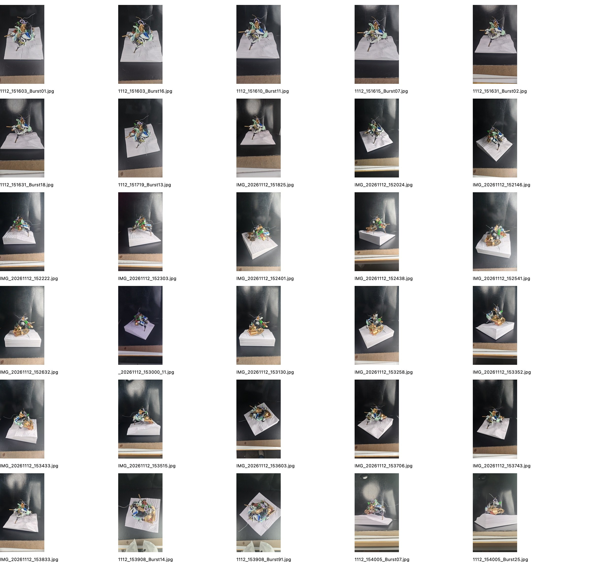
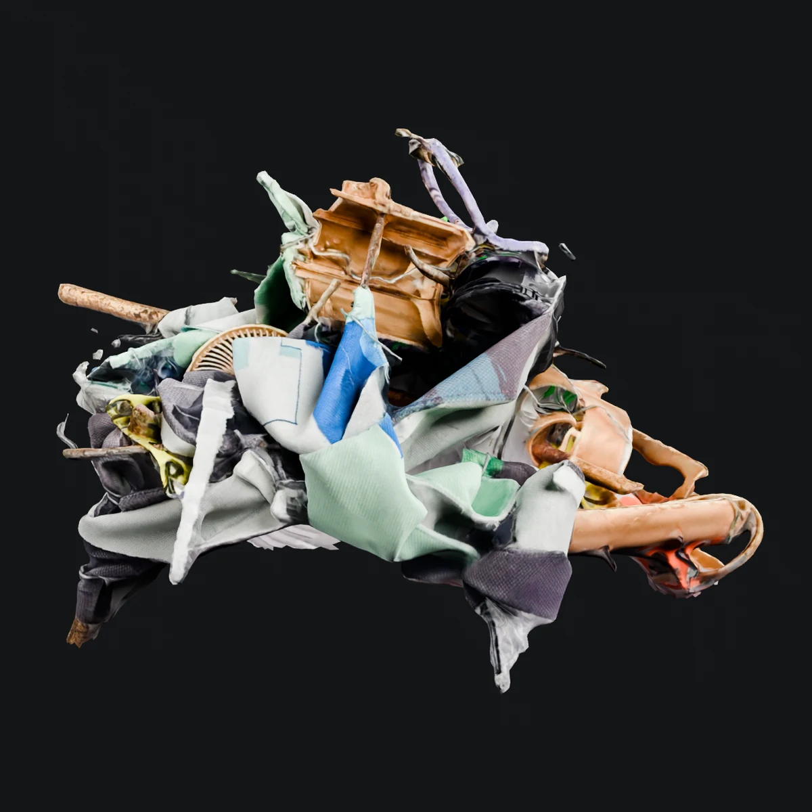
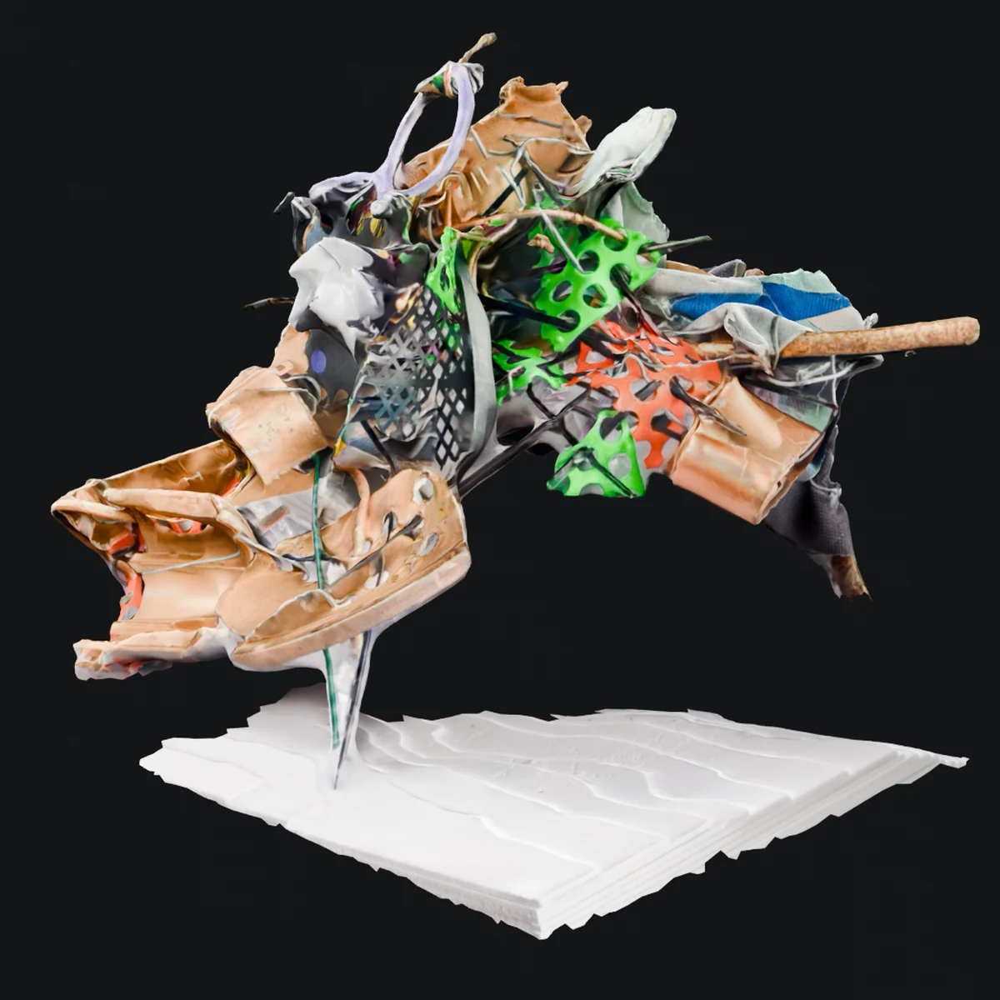
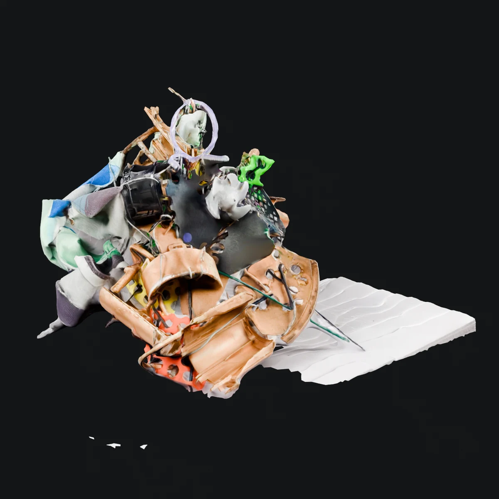

01 / 观察
LOOKING它并不
精致。
靠近看，黄铜片是剪开的，折痕没有对齐；线头从结构里伸出来，没有收口；漆涂得很薄，底下还是金属。也正因为这样，照片才抓得住它——每一个毛边都成了定位点。
- 01
折边
黄铜片被剪开、折起，再压进主体。
- 02
漆
蓝、绿、灰，停在折痕与凹处。
- 03
线
细线从接缝里伸出来，没有收口。
拖动右侧的模型。它的背面和正面一样热闹。
READING SURFACE
读取表面
扫描件 001 / 2026
它没有留下名字。金属片、漆和线被攒在一起，又被 449 张照片从各个角度收进电脑。这里看到的是它的表面，不是它的全部。
01 / 观察
LOOKING靠近看，黄铜片是剪开的，折痕没有对齐；线头从结构里伸出来，没有收口；漆涂得很薄，底下还是金属。也正因为这样，照片才抓得住它——每一个毛边都成了定位点。
黄铜片被剪开、折起，再压进主体。
蓝、绿、灰，停在折痕与凹处。
细线从接缝里伸出来，没有收口。
拖动右侧的模型。它的背面和正面一样热闹。
02 / 采集
2026 年 11 月，对象被放在一块白色泡沫上，用手机绕着拍了两圈。没有灯箱，也没有转台。
摄影测量软件不知道哪里是主体。它把泡沫底座、桌面和灯光的反射一起扫了进来。细线断了，漆面被抹平，几处薄片变成了洞。
我们没有修掉这些。它们记录了这次采集的边界。

“模型不是复制品。
它是一次采集留下的证据。”
03 / 细部
以下画面直接由模型渲染。默认保留扫描底座，按右下角的「座」可以把它移除。



04 / 文件
页面里的模型是压缩过的 GLB：50,019 个顶点，99,999 个三角面，一张 2,048 像素的 JPEG 贴图。原始 FBX 和转换脚本放在 GitHub。
| 对象 | 无题金属攒件 |
|---|---|
| 采集 | 449 帧 / 2026.11 |
| 网格 | 50,019 顶点 / 99,999 三角面 |
| 贴图 | 原始 4,096² / 网页 2,048² JPEG |
| 坐标 | Y-up / 原点在对象中心 |
| 许可 | 代码 MIT / 模型仅作展示 |
GITHUB / SOURCE
timicai8787-pixel / surface-study